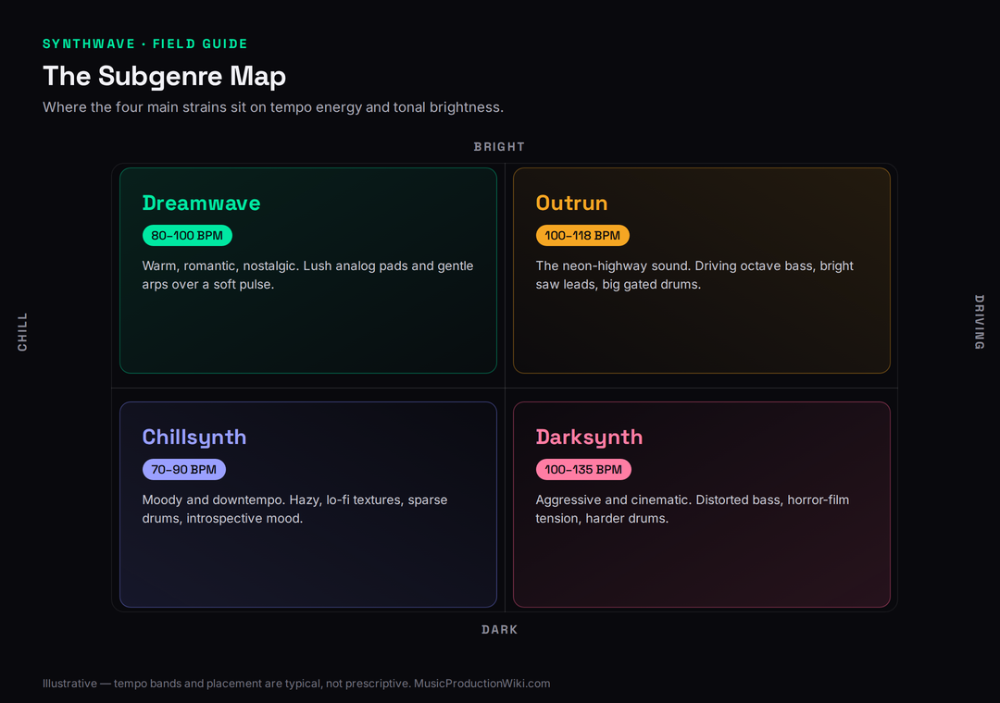
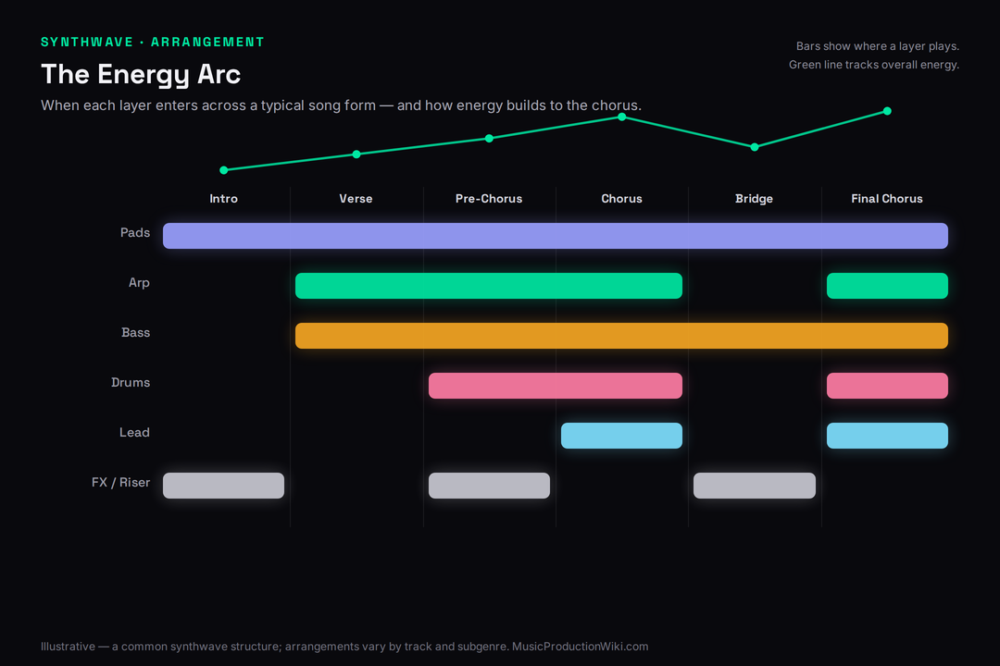
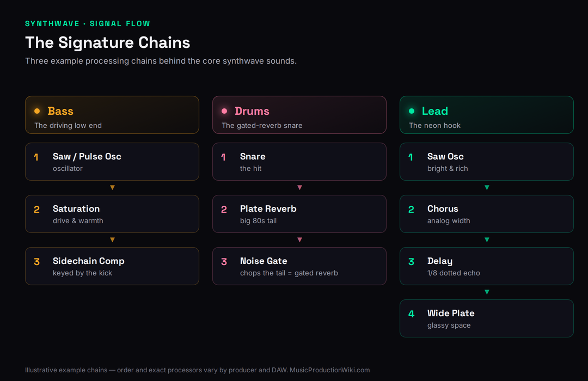

Synthwave is one of the most imitated sounds in modern production and one of the most misunderstood. Open any “synthwave preset” pack, load a saw, drench it in reverb, and you get something that gestures at the genre without ever landing it. The reason is simple: synthwave isn’t a preset — it’s a small set of deliberate 1980s production choices. The neon-soaked, driving-at-midnight feeling people are chasing comes from four decisions made on purpose: the bass that pushes the track forward, the big gated drums, the lush analog-poly chords, and a mix coloured with tape, chorus, and neon-bright air. Get those four right and you are most of the way to a record. Miss them and no amount of reverb saves it.
This guide builds a synthwave track the honest way — in the order the sound is actually constructed, not in the order a listicle demos it. We’ll set the tempo and arrangement, build the engine-room bass, program drums that hit like 1985, voice the analog-poly chords and the bright saw lead that carries the hook, and finish with the tape-and-chorus mix character that screams ’80s. Along the way you’ll see why this genre has the tightest relationship with classic polyphonic synths of almost any modern style, and where the long tail lives — outrun, darksynth, dreamwave — so you can aim at the exact corner of the sound you want.
Synthwave comes down to four signatures, not a preset. (1) A driving analog-style bass — saw or pulse, octave or arpeggiated, sidechained to the kick. (2) Big ’80s drums — punchy electronic kit with gated reverb on the snare and layered claps. (3) Lush analog-poly chords — detuned, chorused, wide, in a minor key, plus a bright saw lead with glide. (4) A period-correct mix — tape saturation, chorus, wide plate reverb, neon-bright EQ, and gentle bus glue. Lock the bass and drum groove first, add the chords and lead, then colour the whole thing. The vibe is in those four choices, not in the synth you bought.
What Synthwave Actually Is (and Its Subgenres)
Synthwave (also called retrowave or outrun) is a genre that recreates the sound and mood of 1980s film scores, synth-pop, and Italo disco using the production palette of that decade: analog-style polyphonic synthesizers, FM bells, gated-reverb drums, and tape-coloured mixes. Its antecedents are factual and worth knowing because they tell you what to aim for — the electronic film scores of the late ’70s and ’80s, early synth-pop, and Italo disco’s arpeggiated basslines. The sound re-entered wide awareness through the soundtracks of retro-styled films and games in the 2010s, and has been an evergreen producer pursuit ever since.
It helps to know the subgenres before you start, because each one shifts the four signatures in a different direction, and they’re where the searchable long tail lives. Outrun is the bright, neon, retro-futurist core — major-leaning leads, driving arps, the “cruising at night” feel. Darksynth (sometimes terrorwave) is aggressive and horror-influenced: distorted basses, minor and dissonant harmony, faster or half-time menace. Dreamwave and chillsynth sit on the softer end — slower, nostalgic, pad-forward, less about the groove and more about the wash. Decide which corner you’re in early; it changes your tempo, your harmony, and how hard you push the bass and drums. The map below places the four against the axes that matter.
What unifies all of it is an aesthetic of remembered futurism — the way the 1980s imagined tomorrow, all chrome, sunsets, and grid horizons — and that mood is encoded directly in the sound choices, which is why getting the production right matters more than getting the notes right. The palette is small and specific: analog-style polyphonic synthesizers for the warmth, FM digital synths for the glassy bells and brightness, electronic drum machines for the punchy kit, and tape and analog outboard for the glue. When a track misses, it’s almost always because one of those colours is absent, or because a modern, clinical plugin has replaced the period-correct character with something too clean. It helps to think of synthwave less as a set of notes and more as a set of textures applied in a consistent order — that framing keeps you honest as you build, and it’s why two producers can use completely different chords and melodies and still land unmistakably in the same genre.

Tempo, Groove, and Arrangement
Most synthwave lives between roughly 80 and 118 BPM, with the classic outrun pocket sitting around 84–110. The feel is almost always straight — sixteenth notes locked to the grid, no swing — because the relentless, machine-tight pulse is the genre’s heartbeat. That straightness is doing real work: it’s what makes the arpeggios glitter and the bass feel like a car at constant speed. If you swing a synthwave groove, you accidentally make it funk or disco; the rigidity is the point.
Arrangement follows a simple, repetitive song form that builds by addition rather than by chord-writing gymnastics. A typical structure: an atmospheric intro (pad and arp), a verse that drops in the bass and a stripped drum pattern, a chorus where the full kit and the lead hook arrive, a bridge or breakdown that strips back to pads, and a final chorus that brings everything in. The craft is in what enters when — synthwave is a layering genre, so the energy arc comes from elements appearing and dropping across sections, exactly the discipline covered in how to layer synths. The diagram maps a standard energy arc with the synth and drum layers entering across the form.
A few structural habits are worth internalising. Synthwave sections are usually long and patient — eight or sixteen bars each — because the genre is hypnotic and rewards letting a groove ride rather than cutting quickly between ideas. Transitions are marked with simple, period-correct tools: a riser or reverse cymbal into the chorus, a tom fill, a beat drop-out before the hook, or a snare roll that builds tension. The bridge or breakdown is where you strip back to pads and arp and let the track breathe before the final chorus brings everything back, often with an added octave on the lead or a counter-melody for the lift. None of this is complicated, and that’s the point: the arrangement’s job is to frame the four signatures and build anticipation, not to show off, so keep the moves few and let them land.
Choosing a tempo is really choosing a feel. If you’re writing outrun, sit in the 100–110 pocket where the arps glitter and the bass feels like motorway cruising; if you’re writing dreamwave or chillsynth, drop toward 80–90 and let the pads spread; if you’re writing darksynth, you can push faster or lean on a half-time feel, where the kit hits at half the apparent speed over a fast hi-hat grid and reads as heavier and more menacing. Whatever you pick, lock it early and don’t drift — the entire genre depends on a constant, mechanical pulse, and the bass and arp are built around that fixed grid. A useful test before you write anything melodic: mute everything but the kick and bass and ask whether it already feels like forward motion. If it does, the tempo and groove are right; if it drags or rushes, fix it now, before you build a chorus on top of a foundation that doesn’t drive.

The Bass: The Engine of the Track
If the drums are the body of synthwave, the bass is the engine. It is almost always an analog-style sound — a saw or a pulse wave with pulse-width modulation — and it almost never sits still. The two classic patterns are the octave bass (the root jumping up and down an octave on every eighth or sixteenth note, the Italo-disco move) and the arpeggiated bass (the synth’s arpeggiator running a pattern over the chord root). Either way, the bass is a constant sixteenth- or eighth-note motor, and that motion is non-negotiable: a static held bass note turns synthwave into ambient instantly.
The patch itself is simple but specific. Start from one or two detuned sawtooth oscillators, or a pulse wave with a slow pulse-width modulation that gives the bass a subtle, breathing movement even on sustained notes. Run it through a low-pass filter set fairly closed, with a touch of resonance and a short filter envelope so each note has a little “wow” of brightness on the attack before settling — that filter movement is a big part of why a vintage bass sounds alive rather than static. Keep it monophonic with a fast glide for the octave jumps, and resist the urge to make it too bright; the synthwave bass lives in the low-mids and sub, leaving the air for the chords and lead. A single well-designed bass patch will carry an entire track.
Two production details make a synthwave bass read as authentic. First, the relationship to the kick: the bass and kick share the low end, so you sidechain the bass to the kick — ducking the bass slightly every time the kick lands — which both clears the clash and creates the genre’s signature rhythmic pump. The mechanics of that ducking are worth understanding from sidechain compression, and you can dial the envelope precisely with the sidechain compression designer. Second, the bass wants a little grit: a touch of saturation gives it harmonics that survive on phone speakers where the sub fundamental vanishes. Build the bass first, get it locked with the kick, and you have the floor the whole track stands on.
Two further decisions shape the bass. The first is octave-versus-arpeggio: an octave bass — the root leaping up and down an octave on every step — is the most classic and the most propulsive, while an arpeggiated bass that walks the notes of the chord gives a more melodic, hypnotic motion that suits the dreamier subgenres. Plenty of tracks use both, switching to the busier pattern to lift a chorus. The second is register and EQ: keep the fundamental in the sub and low-mids, roll off the very top so the bass doesn’t fight the lead, and carve a small dip where the kick’s body lives so the two share the low end cleanly rather than masking each other. If you want the bass to read on laptop speakers and earbuds as well as on a big system, that saturation-driven upper harmonic is doing the heavy lifting — the sub fundamental is felt on full-range systems, but the harmonics are what survive on everything smaller, which is most of where your track will actually be heard.
The Drums: Big, Gated, Unmistakably ’80s
Nothing dates a track to the 1980s faster than the drums, and synthwave leans into that hard. The kit is electronic and punchy — the lineage runs through the LinnDrum, the Oberheim DMX, and Simmons electronic toms — with a tight, clicky kick, a big snare, layered claps, and bright, simple hats. The patterns are usually straightforward: a driving kick (often on every beat or a four-on-the-floor variant for the more disco-leaning tracks), a backbeat snare on two and four, and steady sixteenth hats. Restraint matters here; the power comes from the sounds and the space around them, not from busy programming.
The single most identifiable drum move in the genre is gated reverb on the snare. The classic ’80s sound — a huge reverb tail that’s abruptly cut off by a noise gate before it can decay — gives the snare an enormous, explosive body without washing the track in tail. You create it by sending the snare to a big plate or hall reverb and then gating the reverb return so it slams shut after a short window. Understanding the reverb side of this is covered in how to use reverb in a mix and the character of the plate reverb entry; the gate is what turns a normal reverb into the gated ’80s sound. Layer a clap with the snare for width and a sharper transient, and program the kit straight — the machine-tight feel is the genre’s pulse, not a limitation.
The rest of the kit deserves the same care as the snare. The kick should be tight and punchy rather than long and boomy — it shares the low end with the bass, so it wants to be felt, not to dominate, and it’s often layered with a short click for definition. Hats are bright and simple: closed sixteenths with the occasional open hat to mark a transition, played straight so they shimmer rather than groove. Electronic toms — the Simmons-style descending tom fill — are a classic synthwave transition into a chorus or a new section, and a reverse-reverb swell or a white-noise riser does the same job atmospherically. Keep the programming uncluttered; in this genre the drums are a relentless, machine-tight engine, and their power comes from big sounds and clean separation, not from busy fills.
Two relationships make or break the kit. The kick and bass occupy the same low octaves, so decide which one owns the sub: most synthwave lets the bass carry the sustained low end and gives the kick a tight, punchy click and body that cuts through without booming, with the sidechain pump keeping them out of each other’s way. The snare and clap are the other pairing — layering a clap on top of or a hair behind the snare widens the backbeat and adds a sharper transient, and it’s the combination, not either sound alone, that gives the genre its big, hand-built backbeat. Program the whole kit straight and quantised, automate small velocity changes rather than adding busy fills, and reserve the descending tom run or the noise riser for section transitions. The drums should feel inevitable, like a machine running at a fixed speed, because that relentlessness is precisely what makes the track drive — the moment the programming gets clever, the hypnotic forward motion breaks.

Chords and Pads: The Analog-Poly Heart
Here is where synthwave earns its reputation, and where the gear genuinely matters. The chords and pads are the emotional centre of the genre, and they want a lush, wide, analog-style polyphonic voice — the kind of sound the Roland Juno-60, the Sequential Prophet-5, the Oberheim OB-Xa, and the Roland Jupiter-8 made famous. Three things give the chords their character: detune and unison to fatten and widen the sound, a heavy chorus (the built-in Juno chorus is practically a synthwave signature), and slow attack so the pads bloom rather than stab. Width is the goal — these chords should feel like they fill the whole stereo field.
Harmonically, synthwave is mostly minor-key and nostalgic. Common progressions lean on the natural minor and its borrowed chords — movements like i–VI–III–VII, or i–VII–VI, with the wistful, “driving into the sunset” pull that comes from those relationships. If chord choice is where you get stuck, work through how to make a chord progression and keep the chord and key reference open while you write. For the actual instrument, this is the slate’s sweet spot: an analog-modelled poly like the one in our u-he Diva review or the Moog-style polyphony covered in the Arturia Memory V review delivers exactly the warm, wide voicing the genre is built on — and our roundups of the best polyphonic synthesizers and best synth plugins are where to start if you don’t own one yet. The chords are the one place where reaching for an authentic analog-poly emulation pays off immediately.
One more colour belongs in this section: the FM bell and electric-piano sound. The Yamaha DX7’s glassy bells, mallets, and bright electric pianos were everywhere in ’80s production, and a touch of that FM sparkle — a bell countermelody, a soft electric-piano comp under the pads, or a metallic pluck doubling the arp — instantly reads as period-correct and adds a brittle brightness the analog poly can’t produce on its own. Use it sparingly as an accent rather than a lead voice, and it sits beautifully against the warm, wide analog chords.
How you voice the chords matters as much as which chords you pick. Spread the notes wide — root and fifth low, the thirds and colour tones up in the middle and upper register — so the pad fills the field without turning to mud in the low-mids, and move the voicings by the smallest possible steps from chord to chord so the pad reads as one evolving texture rather than a series of blocks. A slow attack of a few hundred milliseconds lets each chord bloom into the mix, and a slow release lets it overlap slightly with the next, which the heavy chorus then smears into that signature glassy wash. Double the pad an octave up with a thinner, brighter patch if you want more shimmer, or layer a string-machine sound underneath for body. The goal throughout is width and warmth at once — a sound big enough to be the emotional centre of the track without ever crowding the bass below it or the lead above.
Leads and Arpeggios: The Hook
The lead is the line people hum after the track ends. In synthwave it’s usually a bright saw lead — cutting, present, often with a little pulse-width movement — played with portamento (glide) so notes slide into each other in that singing, expressive way. A touch of vibrato from an LFO on pitch sells the “played” feel, and a fast-but-not-instant amp envelope keeps the attack from sounding stabby. The melody itself should be simple and memorable; synthwave hooks are rarely virtuosic, because the emotion lives in the tone and the glide, not in the notes-per-second. If melody-writing is the wall, how to make a melody is the place to build the skill, and you can shape the lead’s envelope visually with the ADSR visualizer.
Arpeggios are the genre’s other signature line. A sixteenth-note arpeggiator running over the chords — bright, slightly detuned, often with a long delay — creates the glittering, forward-motion shimmer that defines outrun in particular. Sync the arp to the tempo and let it run; the hypnotic repetition is the effect. To time the arp and its delay perfectly to the grid, the LFO sync calculator and the delay time calculator give you the exact note divisions. A modern wavetable synth like the one in our Serum 2 review handles bright saw leads and arps with ease if you want a contemporary edge over a vintage emulation — many producers blend a vintage-flavoured chord bed with a sharper modern lead on top.
A few touches separate a lead that sings from one that merely plays. Detune two saw oscillators a few cents apart for thickness, add a slow LFO to pitch for a subtle vibrato that only really opens up on held notes, and set the portamento time so notes glide quickly but audibly — too slow and it smears, too fast and you lose the expressive slur that makes the line feel performed by a hand rather than typed into a piano roll. A short, glassy delay and a wide reverb push the lead back into the neon space without burying it, and automating the filter to open across a phrase adds a sense of the line leaning forward into the hook. Keep the lead and the arpeggio out of each other’s way: if the arp is busy and high, write the lead long and singing beneath it; if the lead is active, simplify the arp to a steady pulse. The two lines are a conversation, and the track sounds cluttered the instant they both try to talk at once.
The ’80s Mix Character: Tape, Chorus, and Neon
The final signature is the mix itself, and it’s what separates a convincing synthwave track from a pile of good sounds. The character is warm, wide, and bright all at once — a contradiction the ’80s pulled off with tape and analog gear, and that you recreate with a handful of moves. Start with saturation: a tape or analog-style saturator across the mix bus (and on individual elements like the bass and drums) glues everything and adds the harmonic warmth that reads as “analog.” The mechanics of choosing and driving it are in saturation, and the technique guide on how to use saturation shows how far to push before it turns to fuzz.
Next, the spatial layer. Chorus is everywhere in synthwave — on chords, on bass, on leads — widening and shimmering the sound the way the Juno’s onboard chorus did. Wide plate and hall reverbs put everything in a big, glossy room, and a long, tempo-synced delay on the lead and arp creates the genre’s sense of endless neon space; how to use delays creatively covers the rhythmic-delay side of that. For tone, a gentle high-shelf boost adds the “neon-bright” air that’s part of the aesthetic, and light bus-glue compression with the sidechain pump from the bass section ties the groove together. The order matters: get the sounds and the arrangement right first, then colour — the mix character is the final 10% that makes the other 90% sound like a record, not a substitute for it.
It’s worth being deliberate about how the “warm and bright at once” contradiction gets built, because that’s the part most home productions miss. Warmth comes from the low-mids and from saturation harmonics; brightness comes from a high-shelf lift up top and from the FM and arp content in the highs — so you carve a gentle scoop in the lower-mid mud, add weight just above the sub, and lift the air band, rather than reaching for a single “make it ’80s” move. Order matters on the master bus: glue compression first to tie the performance together, then saturation for harmonics and warmth, then broad tone-shaping EQ, and limiting last and lightly. Check the whole thing in mono, because all that chorus and stereo widening can hollow out the centre or collapse the bass when a club rig or a phone speaker sums the channels — if the track loses its low end or the chords vanish in mono, narrow the widening until it survives. A synthwave mix should sound enormous in stereo and still completely intact in mono; if it only works in stereo, it isn’t finished.
Reference, Loudness, and Finishing
Before you call a synthwave track done, reference it against the sound you’re chasing. Pull up a released track in your target subgenre, match its loudness roughly to yours so a level difference doesn’t fool your ears, and A/B on a dense section — listen for low-end weight, the brightness of the air, the width of the chorus, and how the gated snare sits. Synthwave is a vibe-forward genre, so it doesn’t need to be slammed to brick-wall loudness; many of its best tracks keep dynamics and breathe. Aim for a competitive but not crushed master, and let the chorus-and-reverb width do the work that over-limiting would only flatten.
It helps to finish against a short checklist rather than tweaking endlessly. Does the bass-and-kick groove drive on its own? Is the gated snare big without washing out the track? Do the chords sound wide, warm, and analog rather than thin and digital? Does the lead sing and glide? Is the arrangement built by addition, with clear entrances and a real lift into the chorus? And does the mix read as period-correct — tape, chorus, wide reverb, neon air — while still holding together in mono? When you A/B against your reference, you’re usually hunting one gap, not ten: most often it’s low-end weight, the brightness of the air, or the width of the chorus. Fix the single biggest gap, listen again, and resist the urge to keep stacking once the four signatures are all present and balanced. Knowing when to stop is part of the craft here, because synthwave punishes over-production faster than almost any genre — the clean, confident version of the track almost always beats the busy one.
One last principle: synthwave rewards restraint and commitment in equal measure. Commit to the four signatures — the driving bass, the gated drums, the analog-poly chords, the tape-and-neon mix — and don’t dilute them by hedging toward other genres. If you want to push toward the cinematic, atmospheric end, the techniques in how to make cinematic music blend naturally with dreamwave; if you want the song-craft and hook discipline of a more vocal-driven track, how to make pop music shares synthwave’s love of a simple, memorable top line. But the core stays the same: synthwave is four deliberate choices, made with conviction, in the right order.
Three Builds to Lock the Sound
Reading the four signatures is one thing; getting them into your hands is another. Run these three in order — each one builds the layer above it, so by the end of the advanced drill you have a finished 16-bar synthwave loop.
- Set a tempo around 100 BPM and program a straight, driving kick (every beat or a four-on-the-floor pattern). Keep it tight and clicky.
- Write an octave or arpeggiated bass on a saw or pulse patch, running constant eighth or sixteenth notes over a single minor root.
- Sidechain the bass to the kick so it ducks on every hit, and add a little saturation. Loop it until the pump feels like a motor — that groove is the whole foundation.
- Build the kit: layer a clap with a big snare on two and four, add bright sixteenth hats, and program them dead-straight.
- Create the gated-reverb snare — send the snare to a big plate reverb, then gate the return so the tail slams shut. This is the genre’s signature move.
- Voice a four-chord minor progression (try i–VI–III–VII) on a detuned, chorused analog-poly patch with a slow attack, spread wide across the stereo field.
- Write a simple, memorable saw lead with portamento and a touch of LFO vibrato, plus a sixteenth-note arpeggio with a tempo-synced delay over the chords.
- Arrange a 16-bar section that builds by addition — pads and arp first, then bass and stripped drums, then the full kit and lead for the hook.
- Colour the mix: tape saturation on the bus, chorus on the chords and lead, wide plate reverb, a neon high-shelf, and gentle bus glue. A/B against a reference at matched loudness and note the one gap that remains.
Frequently Asked Questions
Most synthwave sits between roughly 80 and 118 BPM, with the classic outrun pocket around 84–110. The feel is almost always straight — sixteenth notes locked to the grid with no swing — because the relentless, machine-tight pulse is the genre’s heartbeat. Slower, pad-forward dreamwave can drift to the lower end of that range, while darksynth often pushes faster or uses a driving half-time feel. Pick a tempo that supports a constant, driving bass motor; the rigidity of the grid is a feature, not a constraint.
You don’t need a specific synth, but the genre is built on analog-style polyphony, so an analog-modelled poly synth pays off fastest for the chords and pads — the warm, wide, chorused voice of instruments like the Juno, Prophet, and Jupiter is the genre’s heart. An emulation like u-he Diva or Arturia’s Memory V nails that character, and a modern wavetable synth handles bright leads and arps well. Many producers blend a vintage-flavoured chord bed with a sharper modern lead on top. The sound is in the production choices far more than in any one instrument.
Send your snare to a big plate or hall reverb, then put a noise gate on the reverb return and set it to slam shut after a short window — so you hear a huge, explosive burst of reverb that’s cut off abruptly before it can decay into a wash. That abrupt cut-off is the entire effect: it gives the snare enormous body without flooding the track with tail. Layer a clap with the snare for a sharper transient and extra width, and keep the drum programming straight. It’s the single most identifiable drum move in the genre.
Synthwave is mostly minor-key and nostalgic. Progressions lean on the natural minor and its borrowed chords — movements like i–VI–III–VII or i–VII–VI give the wistful, “driving into the sunset” pull the genre is known for. Voice the chords wide and chorused with a slow attack so they bloom. The harmony itself is rarely complex; the emotion comes from the voicing, the detune, and the chorus far more than from clever chord choices. Start with a simple four-chord minor loop and let the production carry the feeling.
Use an analog-style saw or pulse patch and keep it moving — either an octave bass that jumps the root up and down on every eighth or sixteenth note, or an arpeggiated bass running the synth’s arpeggiator over the chord root. The motion is essential; a static held bass turns synthwave into ambient. Then sidechain the bass to the kick so it ducks on every hit, which clears the low-end clash and creates the genre’s signature pump, and add a little saturation so it reads on small speakers. Lock the bass to the kick before anything else — it’s the engine the whole track runs on.
They’re the main synthwave subgenres and they shift the same signatures in different directions. Outrun is the bright, neon, retro-futurist core — driving arps, major-leaning leads, the cruising-at-night feel. Darksynth is aggressive and horror-influenced, with distorted basses, minor and dissonant harmony, and faster or half-time menace. Dreamwave and chillsynth sit on the softer end — slower, pad-forward, nostalgic, more wash than groove. Deciding your corner early matters because it changes your tempo, harmony, and how hard you push the bass and drums.
Usually because the mix character is missing, not the sounds. The ’80s feeling comes from tape saturation, heavy chorus on chords and leads, wide plate reverb, a neon-bright high-shelf, and the sidechain pump from the bass — layered on top of gated-reverb drums and analog-poly chords. If your track has the right notes but sounds modern and clean, add the chorus and the tape colour and widen the reverb; that period-correct glaze is what your ears are missing. The other common culprit is a bass that doesn’t move — without the constant driving motor, it won’t feel like synthwave no matter how it’s mixed.
Synthwave is a vibe-forward genre and doesn’t need to be crushed to brick-wall loudness — many of its best tracks keep their dynamics and breathe. Aim for a competitive but not flattened master, and let the chorus-and-reverb width carry the sense of size that over-limiting would only squash. Reference a released track in your target subgenre at matched loudness and listen for low-end weight, brightness, and width rather than chasing a number. Width and warmth read as “big” in this genre far more than raw loudness does.